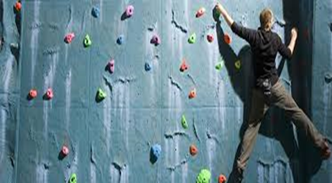

Sejong University
CLIMBING
RESERVATION
현재 인원 :

Location
학생회관 지하 2층, 학생회관 2층(클라이밍)
Available Time
월~금 09:00~22:00
Information
세종대에는 실내의 운동공간이 많다. 공간시간에 한 번 이용해보자. 학생증을 맡기고 헬스장과 탁구대를
이용할 수 있다.
클라이밍의 경우는 개인 장비가 필요하니 참고 하자. 운동 후에 씻을 수 있는 샤워실
도 지하2층 헬스장 옆에 마련되어있다. 세면도구와 수건은 준비되있지 않으니 미리 준비해가도록 하자.
aaa